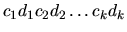
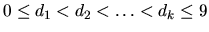
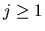
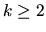
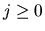

| Numbers That Count |
``Kronecker's Knumbers'' is a little company that manufactures plastic digits for use in signs (theater marquees, gas station price displays, and so on). The owner and sole employee, Klyde Kronecker, keeps track of how many digits of each type he has used by maintaining an inventory book. For instance, if he has just made a sign containing the telephone number ``5553141'', he'll write down the number ``5553141'' in one column of his book, and in the next column he'll list how many of each digit he used: two 1s, one 3, one 4, and three 5s. (Digits that don't get used don't appear in the inventory.) He writes the inventory in condensed form, like this: ``21131435''.
The other day, Klyde filled an order for the number 31123314 and
was amazed to discover that
the inventory of this number is the same as the number--it has
three 1s, one 2, three 3s, and
one 4! He calls this an example of a ``self-inventorying number'',
and now he wants to find
out which numbers are self-inventorying, or lead to a self-inventorying
number through iterated
application of the inventorying operation described below.
You have been hired to help him in his investigations.
Given any non-negative integer n, its inventory is another integer
consisting of a concatenation
of integers

, where each ci and di
is an unsigned integer, every ci is positive, the
di satisfy
,
and, for each
digit d that appears anywhere in n, d equals
di for some i and d occurs exactly ci times in the decimal
representation of n. For instance, to
compute the inventory of 5553141 we set
c1 = 2, d1 = 1, c2 = 1, d2 = 3, etc., giving 21131435.
The number 1000000000000 has inventory 12011 (``twelve 0s, one 1'').
An integer n is called self-inventorying if n equals its inventory.
It is called self-inventorying after
j steps ()
if j is the smallest number such that the
value of the j-th iterative application
of the inventory function is self-inventorying. For
instance, 21221314 is self-inventorying after 2
steps, since the inventory of 21221314 is 31321314, the
inventory of 31321314 is 31123314, and
31123314 is self-inventorying.
Finally, n enters an inventory loop of length k ()
if k is
the smallest number such that for
some integer j (), the value of the j-th iterative application
of the inventory function is
the same as the value of the (j + k)-th iterative application.
For instance, 314213241519 enters
an inventory loop of length 2, since the
inventory of 314213241519 is 412223241519 and the
inventory of 412223241519 is 314213241519, the original number
(we have j = 0 in this case).
Write a program that will read a sequence of non-negative integers and,
for each input value,
state whether it is self-inventorying, self-inventorying after j steps,
enters an inventory loop of
length k, or has none of these properties after 15 iterative
applications of the inventory function.
n is self-inventorying
n is self-inventorying after j steps
n enters an inventory loop of length k
n can not be classified after 15 iterations
22 31123314 314213241519 21221314 111222234459 -1
22 is self-inventorying 31123314 is self-inventorying 314213241519 enters an inventory loop of length 2 21221314 is self-inventorying after 2 steps 111222234459 enters an inventory loop of length 2